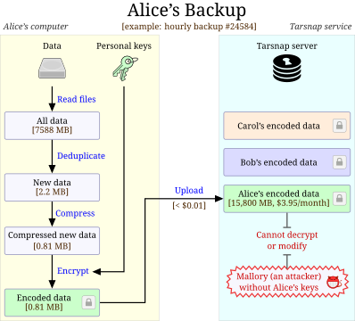

Why use Tarsnap?

Consider a typical backup scenario:
- Alice begins a backup, which takes a complete snapshot of her files.
- Tarsnap automatically finds the unique data within her files.
- Alice pays less than $5/month.
- Alice's data is secure.
Latest Tarsnap release
Tarsnap 1.0.41 (March 21, 2025)
Changes in this version compared to 1.0.40:
-
tarsnapnow has mitigations to defend against information leakage via chunking: Chunks are padded using the PADME scheme, and small-alphabet cycles are prohibited in chunking to block a chosen-plaintext attack. For more details on the attack, see the author's blog post and the paper Chunking Attacks on File Backup Services using Content-Defined Chunking which is available on the Cryptology ePrint Archive. -
tarsnap -cnow accepts--dry-run-metadata, which simulates creating an archive without reading any file data. This is significantly faster than a regular--dry-run, and is suitable for checking which filesystem entries will be archived (with-v) or checking the total archive size (with--totalsor--progress-bytes). -
tarsnapnow accepts--noatimewith-cmode, which requests that the operating system does not update atime when reading files or directories. Not supported by all operating systems or filesystems. -
If the server-side state was modified and
tarsnapexits with an error, it will now have an exit code of 2. -
tarsnapwill read a config file in$XDG_CONFIG_HOME/tarsnap/tarsnap.conf; or~/.config/tarsnap/tarsnap.confif$XDG_CONFIG_HOMEis not set. The previous config file~/.tarsnaprcis still supported, and will not be deprecated. -
tarsnapnow accepts--null-inputas a synonym for--null. For compatibility reasons,--nullis still supported, and will not be deprecated. -
tarsnapnow accepts--null-output, which causes--list-archivesto separate each archive name with a null character (like`find -print0`). If one or more-varguments are specified, multiple null characters are used to separate fields; see the man page for details. -
tarsnapnow accepts--null-outputwith-xand-t, which causes them to separate each filename with a null character. If there are multiple fields on a line, null characters are used instead of spaces; see the man page for details. -
tarsnapnow accepts--null-outputwith--print-stats, which causes it to separate fields and lines with null character(s); see the man page for details. -
tarsnapnow accepts--hashes, which causes--list-archivesto print hashes of archive names. If one or more-varguments are specified, it will print other metadata (as per--list-archives). This option is intended for the GUI and is not needed for command-line usage. -
tarsnapnow accepts-f TAPEHASHwith--list-archives --hashes, which prints metadata about the specified archive(s). Multiple-foptions may be specified. This option is intended for the GUI and is not needed for command-line usage. -
Fixed a problem with strict aliasing if somebody compiled with gcc11
or higher using
-O3, does not have SSE2, and is using a passphrase-protected keyfile.
As usual, there are also lots of minor build fixes, harmless bug fixes, and code cleanups.
You can see all of the changes between 1.0.40 and this version in our tarsnap git repository.